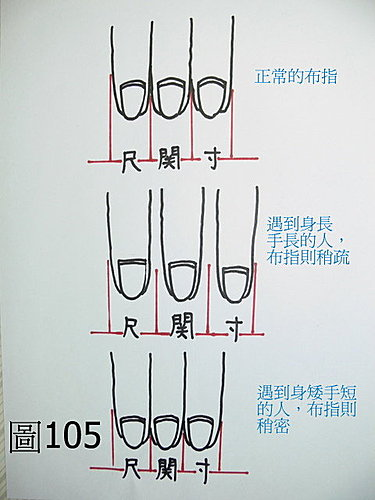
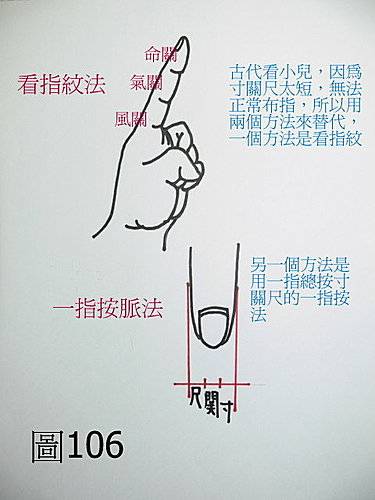
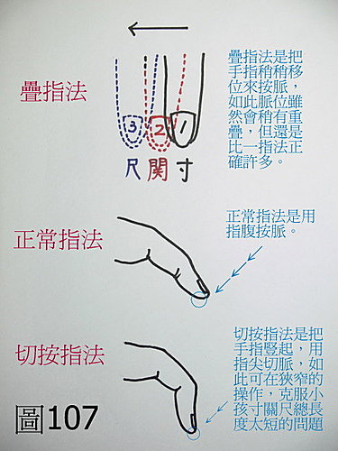
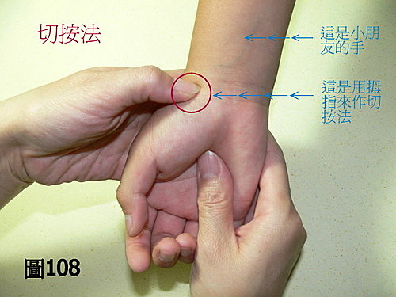
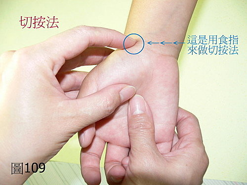
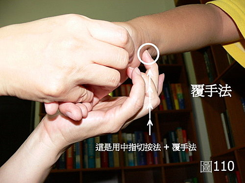
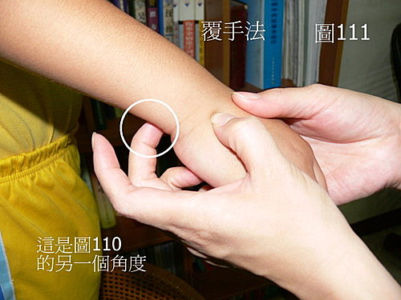

脈理醫理學 21：關於布指疏密的問題。疊指法、切按法、覆手法。
作者：陳建元
關於布指疏密的問題，如果是大人的話，一般較沒問題，〈圖105〉是常態的布指，遇到身長手長的人則布指稍疏，身短手短的人則布指稍密，這是一般的原則，沒有什麼大問題。

〈圖106〉→→→ 但對小朋友則有些問題了，小兒古稱啞科，寸關尺又太短，不好把脈，所以古人用看食指紋色的方法來替代把脈，或是用一指按脈法來替代寸關尺三部。事實上，用這些方法來掌握病情很有限，再加上小孩是啞科，所以對小朋友的疾病，大部分其實都是用五色大抵的亂猜一通，猜中是命，猜不中也是命。
如何來解決這個問題？對於把小朋友的脈象，藥王脈學提出用疊指法、切按法、覆手法。三法可互參合併使用。

〈圖107〉上→→→疊指法。疊指法是在比較短的地方，不好明確分出三關，不如把寸之後，稍稍後移即是關，再稍稍後移即是尺，因為前後指位會有部分重疊，所以叫做疊指法。雖指位部分重疊，但對病機取得的訊息，還是比一指法高出許多。
〈圖107〉下→→→切按指法。〈圖107〉中是常態指法，切按指法是把指頭豎起來把脈，使用的部位是指尖和指尖左右兩側，因為指頭豎起來像刀子切入，所以叫做切按法，切按法可以在很短小的地方，清楚的分出寸關尺三部脈的不同。一般而言，五個指頭都要訓練成可以用切按法，已便應付小朋友各種的奇怪把脈姿勢。〈圖108〉〈圖109〉、都是切按法。



〈圖110、111〉→→→覆手法。小朋友只有少部分會乖乖坐在那邊讓你把脈，其餘都是像蟲一樣，動來動去，有的是很小，讓父母抱著，桌椅標準高度也不好調整，只好調整醫生自己的高度和角度。把脈時，通常都是一面哄騙，轉移其注意力，方能取得片刻寧靜不會像蟲亂動。覆手法是指小朋友的手是掌面向下（覆手），而醫師則是手指向上來取脈，所以叫做覆手法。
疊指法、切按法、覆手法，三法聯合運用，可突破歷來啞科診斷的困擾。


【訂正：〈圖110、111〉中，模特兒把脈按錯側了，正確是切按在橈側動脈管，圖中切按在左側是誤植，請讀者自行訂正過來】
【引用請先來信告知徵求同意，若有涉及販售營利等商業行為，版權所有拷貝盜用必究。】
【藥王脈學講壇】http://blog.xuite.net/drjychen/twblog